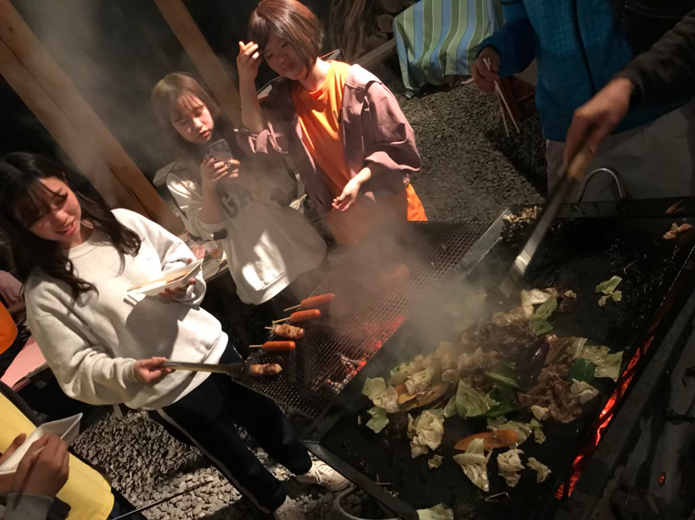

参加団体局紹介

参加団体局の役割
明大祭で企画を行うサークル・ゼミ・個人などが自分たちの「やりたい」を明大祭で100％、またはそれ以上に発揮できるように、サポートしていく局です。各種説明会を行うなどして、参加団体に寄り添いながら、準備を進めます。約半年間サポートしてきた参加団体が明大祭当日に、企画の中で輝いている姿を間近で見届けられるこの局では大きなやりがいを感じることができます！
参加団体局の活動内容
参加団体に対して充実したサポートを行えるように週に1、2回会議をしています。また、参加団体に来年度も明大祭に参加したいと思ってもらえるような取り組みなどを考案していきます！
参加団体局の会議日
局会議 ：毎週木曜日19:00～（予定）
部門会議：毎週火曜日19:00～（予定）
レクの様子
※2019年度のレクの様子です。 参加団体局はこのような状況でもオンライン上でレクリエーションを行っています！例年は、月に数回ご飯を食べたり出かけたりするなどのレクリエーションを行います。1・2年生が中心となって考案し、1年生から4年生まで全員が楽しんでいます。私たちと一緒に充実したキャンパスライフ・実行委員会ライフを楽しみましょう！